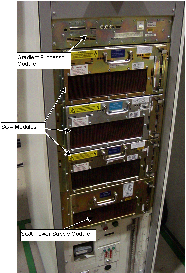
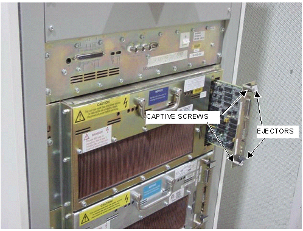

Operating Documentation
Direction 5133330-3, Rev# 14
Signa EXCITE HD 3.0T Service Methods
Module Version 2.0, Version Date 3/4/08
Operating Documentation |
| Required Persons | Preliminary Reqs | Procedure | Finalization |
|---|---|---|---|
| 1 | Not Applicable | Not Applicable | Not Applicable |
This procedure explains the steps needed to replace the control board on the Gradient Amplfier Power Supply (Gradient Amplfier-PS) in the Gradient Cabinet.
| Last Update | 05/18/2005 |
| Item | Qty | Effectivity | Part# | Manufacturer | |
|---|---|---|---|---|---|
| Phillips-head screwdriver | 1 | - | - | - | |
| Standard flat head screwdriver | 1 | - | - | - | |
| Medium Crescent Wrench | 1 | - | - | - | |
| Digital Multimeter with high voltage probes | 1 | - | - | - | |
| ESD Grounding Strap | 1 | - | - | - | |
| Item | Qty | Effectivity | Part# | Manufacturer | |
|---|---|---|---|---|---|
| Control Board Assy. Gradient Amplifier. | 1 | - | 2250375 | - | |
| ||||
| FATAL ELECTRIC SHOCK HAZARD!! | ||||
| POSSIBLE 800 VOLTS ON CAPACITORS. | ||||
| WAIT AT LEAST 5 MINUTES AFTER UNIT HAS BEEN TURNED OFF BEFORE SERVICING. TO PREVENT ELECTRIC SHOCK, DISCONNECT POWER FROM THE PDU BEFORE YOU PERFORM THE FOLLOWING PROCEDURES. PERFORM LOCKOUT / TAGOUT PROCEDURE PER GE OSHA LOCKOUT / TAGOUT REQUIREMENTS LISTED IN THE FIELD SERVICE EHS MANUAL & TRAINING 2000 P/N 2135387-200. |
Perform the Lockout Tag Out Procedure For The Gradient Cabinet.
Note the location of the Gradient Amplfier Module (Illustration 1).
Illustration 1: Gradient CABINET

Put on the ESD Grounding Strap.
Loosen the captive screws on the Gradient Amplfier Control Board faceplate. Remove the board by simultaneously pressing up on the upper ejector and down on the lower ejector on the faceplate. See Illustration 2.
Illustration 2: Gradient CABINET

Remove the Control Board.
Remove the replacement Gradient Amplfier Control Board (P/N 2250375) from its anti-static bag.
Install new Gradient Amplfier Control Board making sure the board is fully seated.
Tighten captive screws.
Remove the Lock Out Tag Out from the Gradient PDU Breakers.
Place the Gradient Breakers in the ON position, restoring power to the Gradient modules.
Verify that power has been restored to the cabinet. The LEDs on the Gradient Amplfiers & the Gradient Amplfier-PS will be illuminated.
Run Digital DC Offsets:
Select [Diagnostics] from the Service Desktop and select [Start].
Select [IPG], [Manual], [Digital DC Offset], then [Close].
Perform the Gradient (GRADCAL).
HFD Gradients and ACGD Gradients use different Control Boards. To ensure the Control Board replaced into the system is the correct board for that system, run Gradient Diagnostics Fidelity Tests. See the Gradient Diagnostics section of Peripheral Diagnostics for help.
| NOTE: | Currently there is no means by visual inspection of differentiating between an HFA Control Board and SGA Control Board in Y and Z HFD amplifiers. The system does, however, differentiate between an HFA Control Board and SGA Control Board in the X HFD amplifier. |
In the event the wrong control board is replaced in the system, 1 or all of the following errors will be logged:
2245297 "GRADIENT DRIVER TESTS - Gradient Fidelity Test failed on the %s Axis. \n\ Maximum Error measured %6.3f uAs during Shot %d, Sample %d.->" 2245298 "GRADIENT DRIVER TESTS - Gradient Fidelity Test failed on the %s Axis. \n\ Shot-to-shot instability measured %6.3f uAs during Sample %d between Shots \n\ 2245299 "GRADIENT DRIVER TESTS - Gradient Fidelity Test failed on the %s Axis. \n\ View-to-view instability measured %6.3f uAs during Sample %d between Shot %d \n\ 2245300 "GRADIENT DRIVER TESTS - Gradient Fidelity Test failed on the %s Axis. \n\ EPI Asymmetry measured %6.3f uAs at Shot %d, View %d, Sample %d
If no errors are reported by the diagnostics, run a test scan and again check for errors.